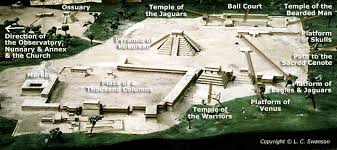
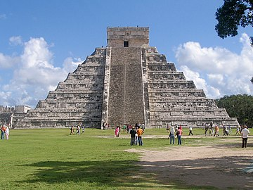

Chichén Itzá[nb 1] (often spelled Chichen Itza in English and traditional Yucatec Maya) was a large pre-Columbian city built by the Maya people of the Terminal Classic period. The archeological site is located in Tinúm Municipality, Yucatán State, Mexico.[1]Chichén Itzá was a major focal point in the Northern Maya Lowlands from the Late Classic (c. AD 600–900) through the Terminal Classic (c. AD 800–900) and into the early portion of the Postclassic period (c. AD 900–1200). The site exhibits a multitude of architectural styles, reminiscent of styles seen in central Mexico and of the Puuc and Chenes styles of the Northern Maya lowlands. The presence of central Mexican styles was once thought to have been representative of direct migration or even conquest from central Mexico, but most contemporary interpretations view the presence of these non-Maya styles more as the result of cultural diffusion.


Chichén Itzá entered the popular imagination in 1843 with the book Incidents of Travel in Yucatan by John Lloyd Stephens (with illustrations by Frederick Catherwood). The book recounted Stephens' visit to Yucatán and his tour of Maya cities, including Chichén Itzá. The book prompted other explorations of the city. In 1860, Désiré Charnay surveyed Chichén Itzá and took numerous photographs that he published in Cités et ruines américaines (1863).Visitors to Chichén Itzá during the 1870s and 1880s came with photographic equipment and recorded more accurately the condition of several buildings.[32] In 1875, Augustus Le Plongeon and his wife Alice Dixon Le Plongeon visited Chichén, and excavated a statue of a figure on its back, knees drawn up, upper torso raised on its elbows with a plate on its stomach. Augustus Le Plongeon called it "Chaacmol" (later renamed "Chac Mool", which has been the term to describe all types of this statuary found in Mesoamerica). Teobert Maler and Alfred Maudslay explored Chichén in the 1880s and both spent several weeks at the site and took extensive photographs. Maudslay published the first long-form description of Chichen Itza in his book, Biologia Centrali-Americana.